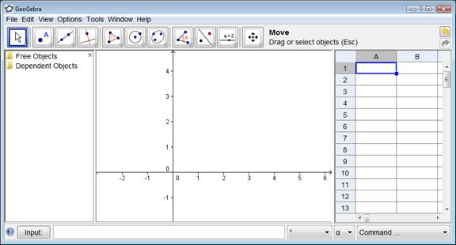

Vistas Múltiples de los Objetos Matemáticos
GeoGebra ofrece
tres perspectivas diferentes de cada objeto matemático: una Vista Gráfica, una, numérica, Vista
Algebraica y además, una Vista de
Hoja de Cálculo. Esta multiplicidad permite apreciar los objetos
matemáticos en tres representaciones diferentes: gráficamente (como en el caso
de puntos, gráficos de funciones), algebraicamente (como coordenadas de puntos,
ecuaciones), y en celdas de una hoja de cálculo. Cada representación del mismo
objeto se vincula dinámicamente a las demás en una adaptación automática y
recíproca que asimila los cambios producidos en cualquiera de ellas, más allá
de cuál haya sido aquella desde la que se lo creara originalmente.

www.geogebra.org